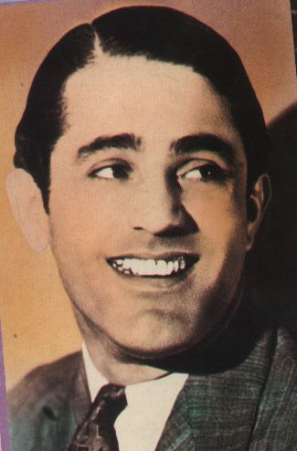

Wednesday, June the 28th, 2006
back to: title, date or indexes
Those of you who have read H P Lovecraft will be familiar with the mad Arab Abdul Al-hazred, author of the Necronomicon, that forbidden and blasphemous tome which is, thankfully, under lock and key. Lovecraft is fond of alluding to Al-hazred, but one cannot help but regret that he paid no attention to other notable mad Arabs. Nowhere in the canon, for example, is there any mention of the mad crooning Arab, Abdul Al-bowlly, who died in the Blitz, nor of the diminutive mad acting Arab, Abdul Al-anladd, who stood on a crate so he would look taller, on screen, than his co-star Veronica Lake.
Then there is the mad retired footballer Arab, Abdul Al-anshearer, currently appearing on the BBC as a rather dull World Cup pundit. Lovecraft has nothing to say about him, and nor does he find room in his many stories for the late mad right wing Conservative MP and diarist Arab Abdul Al-anclark. Indeed it has been left to another crooner, Paul Simon, to draw attention to one of the neglected mad Arabs. Simon, one-time colleague of actor, poet, singer, wild frizzy hair pioneer, intellectual and general Renaissance man Arthur Garfunkel, had a hit record with his paean to fictional mad television chat show host Arab, You Can Call Me Al-anpartridge.
If you know of any other mad Arabs never referred to by H P Lovecraft, please submit their names to the Hooting Yard Mad Arab Database.

Mad crooning Arab Al-bowlly. Lovecraft does not mention him.